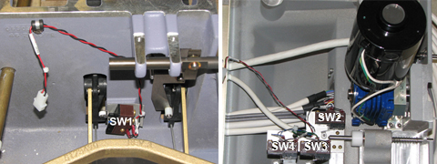
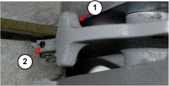

- 00000018WIA30DE1130GYZ
- id_152711042.13
- Aug 21, 2025 11:10:16 PM
Dock Component Replacement
Prerequisites
| Personnel requirements | |||
|---|---|---|---|
| Required persons | Preliminary requirements | Procedure | Finalization |
| 2 | - | 60 minutes for 450/750/450w; 130 minutes for 450w GEM/750w GEM | - |
| Tools and test equipment | |||
|---|---|---|---|
| Item | Quantity | Part number | Manufacturer |
| Nonmagnetic Titanium Service Tool Kit, Large Set or Nonmagnetic Titanium Service Tool Kit, Small Set | 1 | 5112581 or 5113258 | - |
| Consumables | |||
|---|---|---|---|
| Item | Quantity | Part number | Manufacturer |
| LOCTITE #242 | (1) 0.5CC Tube | 46-170686P1 | - |
| Fish paper | As needed | - | - |
| Self-locking Cable Tie | As needed | 46-208758P5 | - |
| Replacement parts | |||
|---|---|---|---|
| Item | Quantity | Part number | Manufacturer |
| Dock Motor | 1 | 5834906 or 5173426 | - |
| SPDT Snap-Action Switch with Screw Term Norm Closed, 10A @125VDC, 3A @250VDC with Short Hinge Roller Lever | 4 | 46-136334P49 | - |
| Spring, Dock Pedal 320Ksi | 2 | 5448742 | - |
| Safety | ||||
|---|---|---|---|---|
| ||||
| ||||
| ||||
| Condition |
|---|
| All persons performing this procedure must complete GE-certified MR safety training. |
Overview
About this task
This document describes how to perform the following procedures:
-
Dock Cover Removal: Dock Cover Removal
-
Dock Motor Replacement: Dock Motor Replacement
-
Dock Switch Removal and Installation: Dock Switch Removal and Installation
-
Dock Pedal Spring Replacement: Dock Pedal Spring Replacement
-
Dock Cover Reinstallation: Dock Cover Reinstallation
Dock Cover Removal
Procedure
Remove the dock from the magnet room. See Dock Removal and Reinstallation.Warning 
Dock Motor Replacement
Dock Motor Removal
Procedure
Remove the dock from the magnet room. See Dock Removal and Reinstallation.Warning - Remove four screws (two on each side) from the dock motor mount
plate.
Figure 4. Dock Motor Mount Plate Screws 
Dock Motor Installation
Procedure
- Remove the e-clip from the end of the dock gearbox shaft on
the old dock motor using the blade of a slotted screwdriver. Secure
the e-clip during removal to prevent the clip from flying away when
pressured.
Figure 5. Old Dock Motor, Gearbox Shaft, and E-Clip 
- Slide the dock gearbox shaft and key out of the dock motor and
set it aside. Remove four screws and mounting plate.
Figure 6. Dock Gearbox Shaft 
- Apply Loctite 242 on the hex screws of the new motor.
Figure 7. Dock Motor, Mount Plate, and Screws 
Dock Switch Removal and Installation
About this task
Switch 1 is located in the bottom casting. Switches 2, 3, and 4 are located in the dock cover.

Procedure
Remove the dock from the magnet room. See Dock Removal and Reinstallation.Warning
Dock Pedal Spring Replacement
Procedure
Remove the dock from the magnet room. See Dock Removal and Reinstallation.Warning
Grasp one end of the dock pedal spring. Insert the end of the spring into the hole at the end of one of the dock pedals.Notice Figure 12. Hole for Dock Pedal Spring 
1 Dock pedal assembly 2 Hole for dock pedal spring Figure 13. Inserting Dock Pedal Spring 
1 Dock pedal spring 2 Grasp one end of the spring and insert it into the hole at the end of one dock pedal. 3 Grasp the end of the spring approximately 1 inch (25 mm) from the end of the spring, and then gently insert the end into the hole in the other dock pedal. 4 Position of the dock pedal spring after installation
Dock Cover Reinstallation
Procedure
- Reattach the switch connector. See Switch Connector.
- Place the dock cover onto the dock base and reattach the dock cover bolts. See Dock Cover and Dock Base.
- Reinstall the dock. See Dock Removal and Reinstallation.
Finalization
Finalization
-
Perform Dock Adjustments and Dock Hardware Adjustments as necessary.
-
Ensure the motor is functioning properly when docking the patient table and verify that lowering the table results in automatic retraction of the LPCA into the bridge.